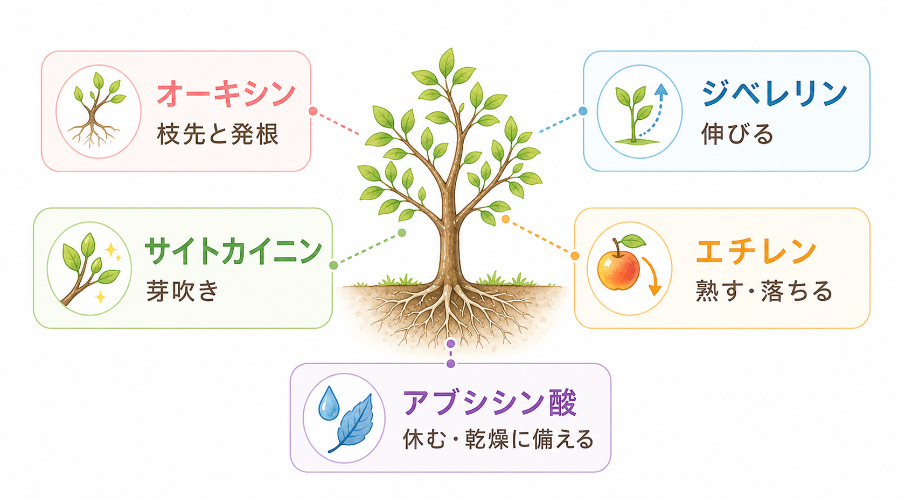
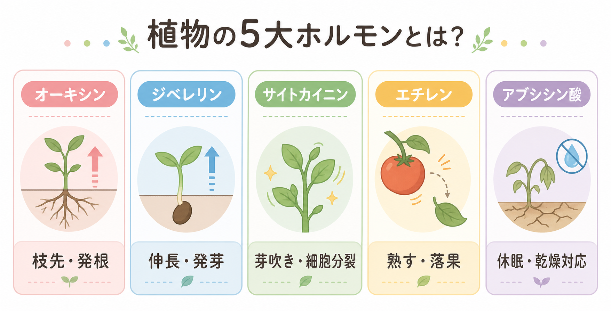
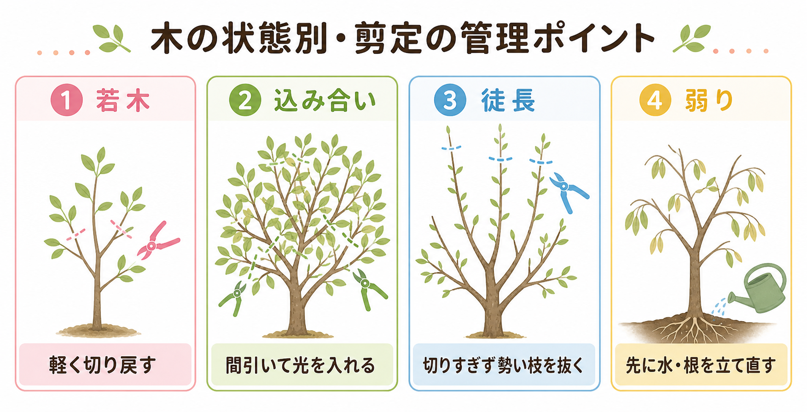

はじめての植物ホルモン入門
植物ホルモンは、木や草の中で働く「成長の合図」です。 このページでは、5大植物ホルモンの基本と、果樹や庭木の管理・剪定にどう生かせるかを、 上から順に読める形でシンプルにまとめます。
← 記事一覧へ戻る
植物ホルモンとは
植物ホルモンは、植物の中で成長や休眠、発芽、熟し方などを調整する化学的な合図です。 動物のホルモンのように決まった器官だけで作られるわけではなく、芽、葉、根、種、果実など、 いろいろな場所で作られます。
園芸ではホルモンそのものは見えませんが、芽の動き方、枝の伸び方、葉の張り、落葉、落果として反応が表に出ます。 そのため、難しく考えすぎるよりも、まず木の反応を見てから「どの合図が強そうか」と考えるのが実用的です。
5大植物ホルモンをざっくりつかむ
基本としてよく出てくるのは、オーキシン、ジベレリン、サイトカイニン、エチレン、アブシシン酸の5つです。 名前だけを覚えるより、何が起きやすいかを短い言葉で覚えると使いやすくなります。

オーキシン
主に若い芽や若葉、種や果実で作られやすく、枝先を優先して伸ばしたり、発根を助けたりします。 園芸では、先端が強いと脇芽が休みやすい、という形で見えやすいホルモンです。
ジベレリン
若い葉や茎の先、発芽中の種などで働きやすく、枝や新梢を伸ばす方向へ木を動かします。 強く出ると木が勢いよく伸びやすく、徒長枝が増える年はこの反応を意識すると整理しやすくなります。
サイトカイニン
根の先で作られやすく、芽吹きや細胞分裂を後押しします。 根が元気な木ほど芽の動きが安定しやすいので、芽吹きが悪いときは剪定だけでなく根の状態も見る必要があります。
エチレン
果実が熟すとき、葉や果実が落ちるとき、傷みやストレスが出たときに関わりやすいホルモンです。 収穫遅れや乾燥、根傷みのあとに落果や落葉が増えるときの説明に役立ちます。
アブシシン酸
乾燥や寒さのときに強く働きやすく、水を守るために気孔を閉じたり、成長を止めたりします。 しおれる前から木の勢いを落とすため、夏の水切れや移植後の弱りを見るときに大事です。
ホルモン同士の関係
実際の木では、1つのホルモンだけで全てが決まるわけではありません。 たとえば、枝先のオーキシンが強いと脇芽は休みやすく、根からのサイトカイニンが強いと芽が動きやすくなります。 剪定で先端を切ると枝先の優先が弱まるのは、この関係があるからです。
ジベレリンは「伸びる側」、アブシシン酸は「休む側」と考えると分かりやすくなります。 春は動き出し、真夏の乾燥や冬は守りに入る、という季節ごとの変化もこの見方で整理できます。
エチレンは、果実や葉が落ちる場面で目立ちます。そこに乾燥や根傷みなどが重なると、 木は実や葉を減らして自分を守ろうとするため、急な落果や落葉が起こりやすくなります。
果樹や庭木の管理・剪定にどう生かすか
ホルモンの知識が役立つのは、「どこを切るか」より「切ったあと木がどう反応するか」を考えるときです。 果樹でも庭木でも、若木、込み合い、徒長、弱りの4場面に分けると判断しやすくなります。

若木では、軽い切り戻しが効きやすい
まだ骨格を作っている時期は、先端を少し切ることで脇芽が動きやすくなります。 果樹でも庭木でも、枝数を増やしたい時期には有効ですが、一度に強く切りすぎると徒長枝が増えやすくなります。
込み合った木では、外側を詰めるより間引きが基本
外周だけを細かく切ると、表面ばかり芽が増えて中が暗くなります。 果樹では光を入れて実つきを安定させるため、庭木では自然な枝流れを保つため、 どちらも不要枝を元から抜く間引き剪定の方が理にかないます。
徒長枝が多い木は、切りすぎの反動を疑う
強剪定のあとに太く長い枝が一気に出るのは、木が伸びる方向へ強く傾いているサインです。 次は切り戻し量を減らし、勢い枝を選んで抜き、施肥が強すぎないかも合わせて見直します。
弱った木は、先に水と根を立て直す
芽吹きが悪い、葉が小さい、葉先が焼ける、乾きやすい、という木では、 先に根傷みや過湿、水切れ、根詰まりを疑います。こういう時期は強剪定よりも回復を優先した方が安全です。
果実の熟し方や落果も見る
果樹ではエチレンが品質や落果に直結します。熟しすぎた果実を放置しないこと、 水切れや根傷みを重ねないことが、味と落果防止の両方に効きます。
剪定したあとに見るポイント
剪定の良し悪しは、その場よりも数週間後から数か月後の反応に出ます。 次のような点を見ると、翌年の切り方を修正しやすくなります。
- 芽がどこで動いたか。切り口近くに偏りすぎていないか。
- 新梢が必要以上に長く暴れていないか。
- 葉の大きさや色がそろっているか。弱い枝だけ極端に小さくないか。
- 果樹なら実つきと落果のバランスがどう変わったか。
- 弱った木なら、芽数より先に葉の張りと水持ちが戻っているか。
まとめ
植物ホルモンは、園芸の現場では「枝先が強い」「芽が動く」「熟して落ちる」「乾燥で止まる」といった反応として見えます。 名前の丸暗記よりも、木の反応を見てから合図に読み替える方が、果樹や庭木の管理にはずっと役立ちます。
参考にした主な資料
- NCBI Bookshelf: Plant Biology and Agriculture
- PMC: Auxin, cytokinin and the control of shoot branching
- PMC: Ethylene
- PMC: Abscisic Acid Signaling in Seeds and Seedlings
- Purdue Extension: Training and Pruning Fruit Trees
- Penn State Extension: Peach Tree Pruning
- University of Georgia Extension: When to prune landscape plants and how to do it right